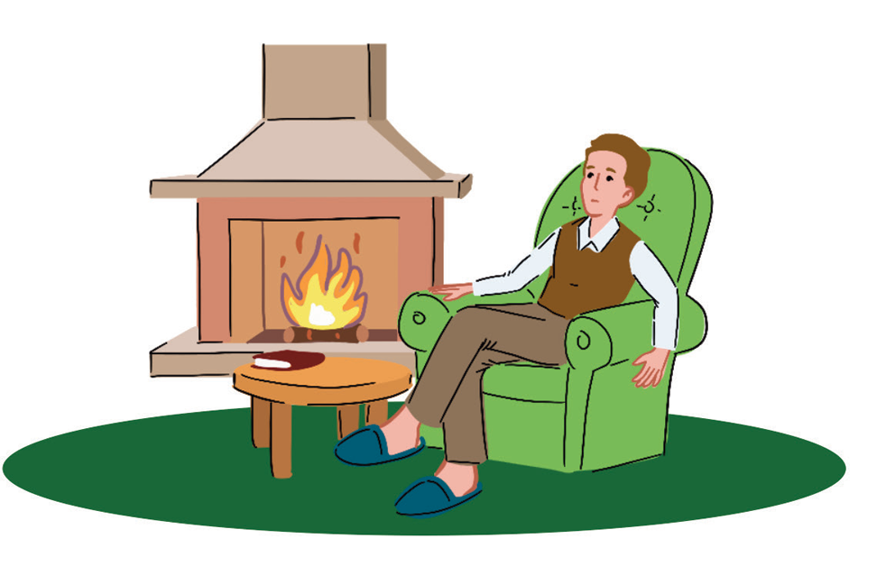
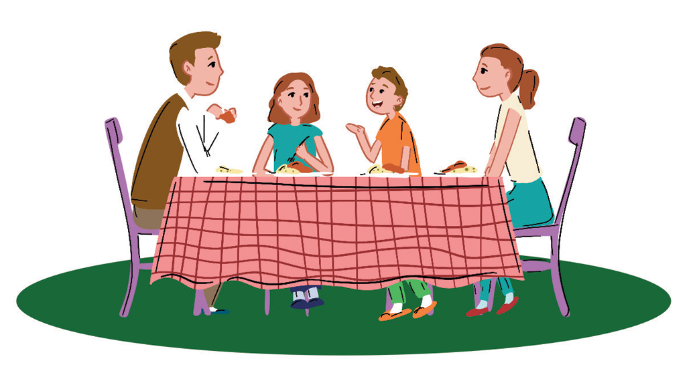

Jeta në Kosovë dikur dhe sot
Familja dikur dhe sot
Situata 1.
Dje, ulur para oxhakut në dhomën e ndenjjes, duke dëgjuar kërcitjen e zjarrit, kujtova shtëpinë e madhe të fëmijërisë sime, në fshatin tonë, që, po ashtu, kishte oxhak, rreth të cilit mblidheshim për t'i dëgjuar historitë e gjyshit tim.
Nën një çati jetonim 27 anëtarë. Gratë e shtëpisë përgatitnin ushqimin dhe na shtronin sofrën me radhë: së pari fëmijët, më pas burrat e në fund hanin gratë. Detyrë e grave ishte të kryenin punët e shtëpisë, të kujdesishin e t'i rritnin fëmijët. Pak gra ishin të shkolluara e të punësuara. Vendimet në shtëpi i merrte gjyshi, se ishte i zoti i shtëpisë. Ishin kohë të vështira. Nuk kishim ujësjellës. Nuk kishim rrymë elektrike. Natën ndriçonim me qirinj ose me llambë vajguri.
Tani jetoj në qytet, në Pejë. U ktheva nga puna. Po përgatis darkën për gruan time mjeke, e cila së shpejti do të kthehet nga spitali ku punon dhe për vajzën time studente që po vjen me makinë nga Prishtina. Ajo do të marrë në aeroport vëllanë e saj, i cili po studion në Londër. Epo, kësaj i thonë familje bashkëkohore!

